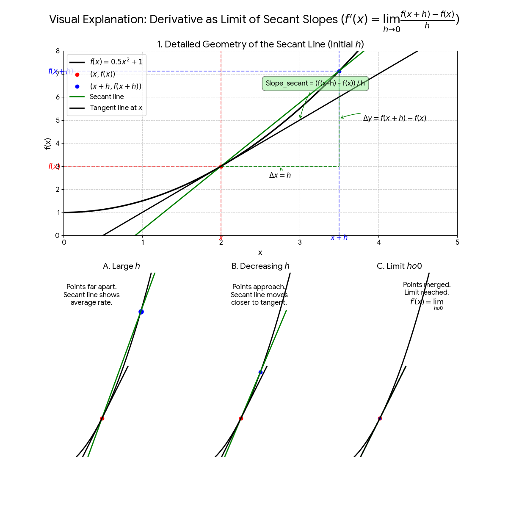

Derivative is the slope of a curve or A derivative measures the instaneous rate of change of a function with respect to its variable.
The slope of the tangent line to the function's graph at a given point.
Deravatives are mostly represented by dy/dx or f'(x). f'(x) is read as f prime of x. dy/dx represents derivative of y in respect to derivative of x as a fraction.although there are many more ways used to denote derivative.
The derivative of a function is equal to the limit of the average rate of change as the number approaches 0. So what it means is we take two points x and x+h then calculate f(x) and f(x+h) and plot them then we calculate the slope of secant between them and put a limit on slope of secant as h approaches 0 and the secant becomes tangent. The formula of derivative through this method is f'(x)=limh->0 f(x+h)-f(x)/(x+h)-x the expression after limit gives slope as slope is y2-y1/x2-x1

The process shown visually
The power rule states to find f'(x) where f(x)=xn the f'(x) will be equal to n•xn-1 where n is a real number. the formula is f'(x)=n•xn-1, if the funtion is f(x)=a•xn then f'(x)=a•n•xn-1
The constant rule states if a function gives a constant for all values of x. then f prime will be 0. In mathematical terms if f(x)=c then f'(x)=0
The sum and difference rule states that the derivative of sum or difference of two functions is equal to the sum or difference of derivatives of those two functions.If you are doing sum do sum both side and if you do difference do difference both side.d/dx[f(x)±g(x)]=f'(x)±g'(x).
It is a rule to find derivative of two or more functions which are multiplied. Formula is d/dx[f(x)•g(x)]=f'(x)•g(x)+f(x)•g'(x).
This rule helps us find derivative of quotient of two functions. Formula is d/dx[f(x)/g(x)]=[{g(x)•f'(x)}-{f(x)•g'(x)}]/g(x)².
so if we use formula f'(x)=limh->0 f(x+h)-f(x)/(x+h)-x we can actually derive it , give it a try by putting it in d/dx[f(x)/g(x)]
Derivatives were found by Issac Newton and Gottfried Wibhelm Libniz. they discovered it to calculate instaneous problems such as speed and motion.